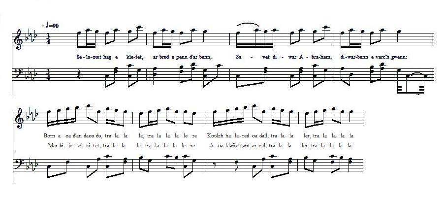

Marc'h Abraham
Le cheval d'Abraham
Abraham's Nag
Chant collecté par Théodore Hersart de La Villemarqué
dans le 1er Carnet de Keransquer (pp. 165-168).

Mélodie
Arrangt Christian Souchon (c) 2015
| Pas de mélodie connue. Remplacée ici par un air de danse bretonne connu (hanterdro). | No tune known. Replaced here with a popular Breton tune (hanter-dro). |
|
BREZHONEK p. 154 1. Selaouit hag e klefet,/ ar brud e penn d'ar benn, Savet diwar Abraham,/ diwarbenn e varc'h gwenn: Born a oa d'an daou du, tra la la la, tra la la la le ro Koulzh ha lared oa dall, tra la la ler, tra la la la la Mar bije vizitet, tra la la la, tra la la la le ro A oa klañv gant ar gal, tra la la ler, tra la la la la 2. War-dro seizh pe eizh eur, O,/ pa a gasas ar marc'h, Abraham a gomans, O,/ gomans da yudal 'walc'h, A zigor e zaoulagad,/ ha da skrignal e zent. - Kenavo, va marc'hik paour,/ 'n em vimp mui en hent! - 3. - Yann Gamm ne meritit ket,/ c'hwi ne meritit ket Kavout ur marc'h-inkane,/ pa n'hen konduit ket! - Yann Gamm a skandale,/ ha lare d'Abraham, Lare: - N'hen gouiez ket?/ Lare: - N'hen gouiez ket. 4. Lare: - Ne meritez ket,/ kaout un tas a kafe Kaoued un tas a kafe,/ pe n'hen konduez ket! - Ar marc'h paour a lamme,/ lamme pevar korn an ti Kichen ar gaferenn,/ a oa prest da virviñ. 5. Yann Gamm a skandale O,/ a lare d'Abraham - Kerzh fonnus da Gemper O,/ da glask ur medisin! Pehini jom e ker,/ pehini jom e ker, A oar doc'h ar kezek,/ abaoe pell-amzer. - p. 155 6. M'am-eus gwelet Abraham,/ oa o vont da Gemper, E fouet en-dro dezhañ,/ evel ur roulier O c'hlask ar medisin,/ pehini jom e ker A oar doc'h ar kezek,/ abaoe pell-amzer. 7. Marc'h Abraham,/ zo desedet! Kalz a dud a enor, /zo bet d'hen gwelet: Daou biker ha daou doer,/ ha daou gemener, Ha gwragez ha merc'hed /yaouank pere chom e ker. KLT gant Christian Souchon. |
TRADUCTION FRANCAISE p. 154 1. Vous plairait-il d'entendre,/ un récit édifiant? L'histoire d'Abraham, O,/ et de son cheval blanc, Borgne des deux yeux, O, tra la la la, tra la la la le ro Carrément bigleux, O tra la la ler, tra la la la la En regardant mieux, O tra la la la, tra la la la le ro Il était galeux, O, tra la la ler, tra la la la la 2. Vers les sept ou huit heures,/ en cherchant son cheval, Abraham, quelle horreur, O,/ pense se trouver mal Ses cris sont stridents, O,/ Il grince des dents, O, - Adieu, pauvre vieux, O,/ Nous étions heureux, O! - 3. Jean Le Cam à coup sûr, O,/ tu ne mérites pas D'avoir d'autre monture,/ qu'une jument de bois! Jean Cam vocifère,/ et il le fait taire, Disant: - sais-tu bien, O,/ que tu ne sais rien, O? 4. Tu ne mérites guère,/ qu'on t'offre le café La tasse est trop légère,/ tu ne sais la manier. - Pauvre canasson, O,/ qui dans la maison, O Erres et répands, O,/ le café brûlant O! 5. Jean Le Cam de plus belle,/ hurle sur Abraham: - Va-t-en vite à Quimper, O,/ chercher un médecin En ville il en est, O,/ plus d'un qui connaît, O Les chevaux et sait, O,/ comment les soigner, O. - p. 155 6. Abraham prend la route,/ pour se rendre à Quimper, - Son fouet s'enroule en boucle,/ roulier n'est pas plus fier - Trouve un médecin, O,/ qui s'y connaît bien, O En chevaux et sait, O,/ comment les soigner, O. 7. Le cheval d'Abraham, O,/ hélas est décédé Et plus d'un bourgeois/ passe ici pour l'honorer: Deux piqueurs, deux couvreurs,/ deux couvreurs, deux tailleurs Filles et grand'mères,/ habitant Quimper, O. . Traduction: Christian Souchon (c) 2015 |
ENGLISH TRANSLATION p. 154 1. O Listen all, O listen,/ to the whole of my song, It is about Abraham,/ and his white stallion: Was one-eyed on both sides, tra la la la, tra la la la le ro And some said it was blind, tra la la ler, tra la la la la Others, which is still worse, tra la la la, tra la la la le ro Said 't was a scabby horse, tra la la ler, tra la la la la 2. Now, toward seven o' clock/ As he fetched back his horse, Abraham started screaming/ And yelling himself hoarse, And he stared wide-eyed/ His teeth he did grind: - My fair horse, my pride,/ No more I shall ride! - 3. - John Le Cam, you don't deserve,/ He said gasping for breath, Being with a horse entrusted,/ Since you work it to death! John by anger led,/ To Abraham said: - I will add to it/ What you don't merit: 4. A nice cup of coffee, sir/ You don't deserve at all The cup would be endangered/ Your hand would let it fall! - The blind nag did bound/ All over the ground, Knocked the coffee pot/ That was boiling hot. 5. John Le Cam screamed still louder,/ Said to poor Abraham: - Off with you, go to Quimper,/ And fetch a physician! One who lives in town,/ One of good renown, Conversant with horses,/ With long experience! - p. 155 6. I have spied poor Abraham/ On his way to Quimper, - Had got tangled in his whip,/ A real waggoner! - To a physician,/ One who lives in town, Knows what is a horse,/ With long experience. 7. Poor Master Abraham's horse,/ On that day has deceased! A lot of prominent folks,/ Convened from west and east: Two grooms and two roofers, / Two roofers, two tailors, Lots of girls and matrons/ All of them live in town. Translation: Christian Souchon (c) 2015 |
NOTES:
|
Bibliographie: Encore un chant que La Villemarqué semble être le seul à avoir noté. Remarques Si Abraham n'avait pas suivi le mauvais conseil de Jean Le Cam ("Kamm" est un nom de mauvaise augure: il signifie "boiteux"), et préféré un vétérinaire de campagne à un praticien de la ville, il aurait épargné à son bidet le long voyage à Quimper, et le malheureux cheval, c'est sûr, serait encore en vie. |
Bibliography: Again a song which, apparently only La Villemarqué came across and recorded. Remarks If Abraham had not followed John Le Cam's bad advice ("Kamm" is an ominous name since it means "lame, who limps"), if he had preferred a country vet to a town surgeon, he had thus spared his poor beast a long journey to Quimper, and the unfortunate horse, to be sure, were still alive. |